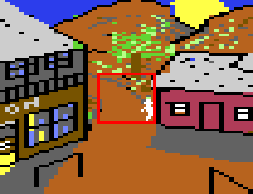
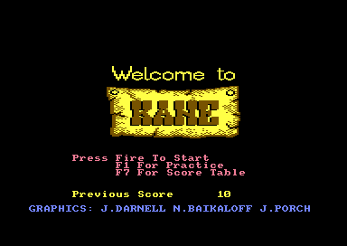
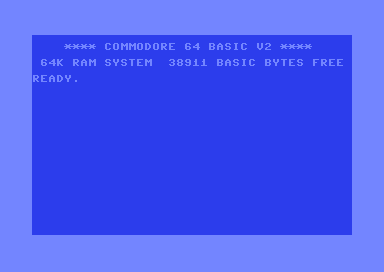
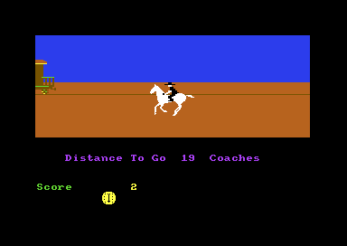

<meta charset="utf-8">
<meta name="viewport" content="width=device-width, initial-scale=1">
<title>Kane</title>
<link rel="preconnect" href="https://fonts.googleapis.com">
<link rel="stylesheet" href="https://fonts.googleapis.com/css2?family=Lato:wght@400;700;900&family=IBM+Plex+Mono:wght@400;500&display=swap">
<style>
:root{
  --bg:#23262d; --paper:#e9e7e1; --surface:#ffffff; --surface-2:#f1efea; --line:#d5d3cc; --line-soft:#e0ded8;
  --ink:#2f3136; --ink-soft:#55585f; --ink-mute:#80838a;
  --link:#1f5fa8; --link-hover:#154480; --accent:#1f5fa8;
  --amber:#c25a00; --cyan:#1f5fa8; --coral:#d04a3a; --green:#2a8a4a; --violet:#4a5bd6; --hl:#fff0c2;
  --chip:#2f3136; --chip-ink:#ffffff;
  --c64blue:#40318d; --c64grey:#686868;
  --fd:'Lato',system-ui,sans-serif; --fb:'Lato',system-ui,sans-serif; --fm:'IBM Plex Mono',ui-monospace,Menlo,monospace;
  --col:1080px; --gx:68px; --fs:17px; --lh:1.6; --hw:900; --h1:46px; --h2:26px; --sy:48px; --pp:26px; --r:10px;
  --plate-shadow:0 1px 2px rgba(0,0,0,.05),0 4px 14px rgba(0,0,0,.05);
}
*{box-sizing:border-box}
html{background:var(--bg);min-height:100%}
body{background:var(--paper);color:var(--ink);font-family:var(--fb);font-size:var(--fs);line-height:var(--lh);max-width:var(--col);margin:0 auto;min-height:100vh;padding:0 0 4rem}
h1,h2,h3{font-weight:var(--hw);letter-spacing:-.01em;text-wrap:balance;color:var(--ink);margin:0}
.wrap{padding:0 var(--gx)}
.hero{padding:48px var(--gx) 8px;text-align:left}
.eyebrow{font-family:var(--fm);font-size:12px;letter-spacing:.08em;text-transform:uppercase;color:var(--ink-mute);margin:0 0 10px}
.hero h1{font-size:var(--h1);line-height:1.15;letter-spacing:-.02em;margin:0 0 14px}
.hero .sub{margin:0 0 .6em;color:var(--ink-soft)}
section{padding:var(--sy) 0 24px}
section:last-of-type{border-bottom:none}
.fig{font-family:var(--fm);font-size:12px;letter-spacing:.08em;text-transform:uppercase;color:var(--ink-mute);margin:0 0 10px}
h2.t{font-size:var(--h2);margin-bottom:12px}
.lede{color:var(--ink-soft);margin:0 0 30px}
.plate{background:var(--surface);border:1px solid var(--line);border-radius:var(--r);padding:var(--pp);box-shadow:var(--plate-shadow)}
.cap{font-size:14px;color:var(--ink-mute);margin-top:14px;line-height:1.55}
.cap b{color:var(--ink);font-weight:700}
code{font-family:var(--fm);font-size:.82em;background:var(--chip);color:var(--chip-ink);border-radius:4px;padding:2px 6px;white-space:nowrap}

.kn-cv{display:block;width:100%;height:auto;image-rendering:pixelated;background:#000;border-radius:4px}
.kn-stack{position:relative}
.kn-stack canvas+canvas{position:absolute;left:0;top:0;background:transparent}
.kn-bar{display:flex;flex-wrap:wrap;gap:8px;margin:0 0 14px}
.kn-btn{font:inherit;font-family:var(--fm);font-size:12.5px;background:var(--surface);border:1px solid var(--line);border-radius:6px;padding:5px 11px;color:var(--ink);cursor:pointer;line-height:1.3}
.kn-btn:hover{border-color:var(--ink-mute)}
.kn-btn[aria-pressed="true"]{background:var(--accent);border-color:var(--accent);color:#fff}
.kn-out{font-size:15px;color:var(--ink);margin:12px 0 0;min-height:3em;line-height:1.55}
.kn-two{display:grid;grid-template-columns:minmax(0,1fr) minmax(0,1fr);gap:22px;align-items:start}
.kn-two figure{margin:0}
.kn-two img{display:block;width:100%;height:auto;image-rendering:pixelated;border-radius:4px}
.kn-two figcaption{font-size:13px;color:var(--ink-mute);margin-top:6px}
.kn-tbl{border-collapse:collapse;font-size:14px;width:100%;margin:4px 0 0}
.kn-tbl th,.kn-tbl td{text-align:left;vertical-align:top;padding:5px 8px;border-bottom:1px solid var(--line-soft)}
.kn-tbl th{font-weight:700;color:var(--ink-soft)}
.kn-tbl td.kn-n{font-family:var(--fm);font-size:13px;white-space:nowrap}
.kn-range{display:flex;align-items:center;gap:12px;margin:12px 0 0;font-family:var(--fm);font-size:13px}
.kn-range input{flex:1}
.kn-key{display:flex;flex-wrap:wrap;gap:6px 16px;font-size:13px;color:var(--ink-soft);margin:8px 0 0}
.kn-key i{display:inline-block;width:11px;height:11px;border-radius:2px;margin-right:6px;vertical-align:-1px}
@media (max-width:720px){.kn-two{grid-template-columns:1fr}}
</style>
<!-- tabs -->
<header class="hero">
  <p class="eyebrow">1985 · Mastertronic</p>
  <h1>Kane</h1>
  <p class="sub">A Marshall who keeps walking cannot be shot, and the ride to Kane pays the most to a rider who arrives with under a minute left.</p>
</header>
<main class="wrap">

<section>
  <p class="fig">01 · The ride's bonus</p>
  <h2 class="t">Secret: reach Kane with under a minute left for the biggest bonus</h2>
  <p class="lede">Reach Kane with a minute or more on the clock and the time bonus is 80 to 169 counts of points. Reach it with less than a minute left and it is 256 counts, more than any faster finish pays.</p>
  <div class="plate">
    <div class="kn-bar" id="kn-bonus-level"></div>
    <canvas id="kn-bonus" class="kn-cv" width="800" height="220" style="background:#1d1f24"></canvas>
    <div class="kn-range"><span>0.01</span><input type="range" id="kn-bonus-t" min="1" max="119" value="59" aria-label="Time left on the clock"><span>1.59</span></div>
    <p class="kn-out" id="kn-bonus-out"></p>
    <p class="cap">Each bar is the bonus for reaching 4.00 miles with that much time left, worked out the way the ride works it out (<code>ride1_step</code>, <code>$2345</code>). A test beside this page runs the game's own code for every reading of the clock at all three levels and compares.</p>
  </div>
  <p>The clock counts down from 2.00, minutes and seconds, each kept as a BCD byte, a byte whose two halves are two decimal digits (<code>clock_mins</code> <code>$48</code>, <code>clock_secs</code> <code>$47</code>). At the finish a loop adds 15, 20 or 25 points by level, as many times as the byte <code>zpa_10</code> says. With a minute or more left the game puts the seconds there plus <code>$50</code>, added as a plain binary sum although the seconds are BCD. So 1.30 gives <code>$30</code> + <code>$50</code> = <code>$80</code>, 128 counts, and 1.00 gives only 80. With under a minute left nothing is put there. The byte still holds the 0 left by the routine that unpacked the ride's sprites, and a loop that counts down from 0 runs 256 times.</p>
  <p>In the emulator on level 1, reaching Kane at 1.00 gave 1,200 points and reaching it a second later, at 0.59, gave 3,840. Each also got a few more from the next bug.</p>
</section>

<section>
  <p class="fig">02 · Counting the score</p>
  <h2 class="t">Bug: the score counts up more points than it was given</h2>
  <p class="lede">Points go onto the score a few at a time, one frame after another. While 100 to 999 are waiting the game counts them in steps of eleven, and the sums go wrong: the 594 points of a gunman on level 3 put 706 on the score.</p>
  <div class="plate">
    <div class="kn-bar" id="kn-count-bar"></div>
    <div style="display:flex;flex-wrap:wrap;gap:18px;align-items:center">
      <canvas id="kn-count" width="320" height="40" style="image-rendering:pixelated;background:#000;border-radius:4px;width:320px;max-width:100%"></canvas>
      <div id="kn-count-state" style="font-family:var(--fm);font-size:13px;line-height:1.7"></div>
    </div>
    <canvas id="kn-extra" class="kn-cv" width="800" height="200" style="background:#1d1f24;margin-top:16px;cursor:crosshair"></canvas>
    <p class="kn-out" id="kn-count-out"></p>
    <p class="cap">The score is drawn in the game's own font, a frame at a time at the game's pace, by the page's version of <code>count_score</code> (<code>$3B9A</code>). The chart shows the points the score gains beyond those it was given, for every amount from 1 to 2,000 waiting on a score of 0: press it to count any of them. A test beside this page checks the counting against the game's own routine frame by frame, for 2,900 amounts.</p>
  </div>
  <p>The score and the points still to come (<code>pending</code>, <code>$8FA4</code>) are four BCD bytes each. Every frame <code>count_score</code> takes a step off the one and adds it to the other, with the processor's decimal mode on. The step is 1 while fewer than 100 are waiting, <code>$99</code> while 1,000 or more are, and <code>$0B</code> in between. <code>$0B</code> is not a BCD number: it is eleven written in binary. The 6502's decimal mode only works on digits 0 to 9. Given <code>$0B</code>, it leaves digits of 10 to 15 in the score, which the game prints as the characters after 9 in its font: <code>:</code> <code>;</code> <code>&lt;</code> <code>=</code> <code>&gt;</code> <code>?</code>. The next adds carry those digits on as extra points.</p>
  <p>The points waiting go wrong too: taking eleven from 550 leaves <code data-part="">$054F</code>, which the next step reads as 544. A gunman on level 3 is worth 594 points and puts 706 on a score whose last digit is 0 to 4, as the emulator showed, or 690 on one whose last digit is 5 to 9. Under 100 the count is right, and so it is for the 149 points of a duck on level 2. Most larger amounts the game pays gain a little.</p>
</section>

<section>
  <p class="fig">03 · The shoot-out</p>
  <h2 class="t">Secret: keep walking and the gunmen's shots cannot hit the Marshall</h2>
  <p class="lede">A gunman's shot only counts while the Marshall stands still. Walking left and right between shots, he cannot be hit. The inlay says only that standing still makes the gunmen's shots more accurate, and their aim does close in on a Marshall who stands (<code>gunmen_aim</code>, <code>$8A61</code>).</p>
  <table class="kn-tbl">
    <thead><tr><th>In the emulator, one minute of the shoot-out</th><th>Gunmen's shots</th><th>Shots that hit</th></tr></thead>
    <tbody>
      <tr><td>Walking left and right without stopping</td><td class="kn-n">16</td><td class="kn-n">0</td></tr>
      <tr><td>Standing still</td><td class="kn-n">8</td><td class="kn-n">6</td></tr>
    </tbody>
  </table>
  <p>When a gunman fires, <code>gunman_fires</code> (<code>$8AF2</code>) first looks at <code>facing</code> (<code>$90B5</code>), which holds which way the Marshall walks: 1 for left, <code>$FF</code> for right, and 0 only when he stands or fires. Anything but 0 and the shot does nothing at all, not even the puff of dust a miss kicks up. The Marshall can only fire while he stands, so the trick is to stand, shoot and walk on before the next gunman fires. A gunman fires once, after coming out of his hiding place and waiting seven of his steps, between three and four seconds after he starts to appear (<code>gunman_step</code>, <code>$8810</code>).</p>
</section>

<section>
  <p class="fig">04 · F1</p>
  <h2 class="t">Secret: F1 restarts a ride with the clock full and nothing lost</h2>
  <p class="lede">After a fall the game tells you that F1 will restart the level. F1 works at any moment of a ride, fall or no fall, costs no token, and puts two minutes back on the clock.</p>
  <p>The ride's loop checks the F1 key on every pass and jumps back to <code>start_ride</code> (<code>$1F3B</code>), which sets the clock to 2.00 and the distance to 0.00. A ride whose clock is running out can be started again as often as you like, so the clock never has to reach 0.00. In the emulator, with four seconds left on ride 1 and 2.50 miles covered, F1 gave a new ride with the clock full, the distance back at 0.00 and the same number of tokens. Each restart also adds 2 points to the score, the 2 the game has in hand from setting the minutes.</p>
</section>

<section>
  <p class="fig">05 · The hiding places</p>
  <h2 class="t">Bug: two gunmen can hide in the same place</h2>
  <p class="lede">The game means each of the sixteen hiding places to hold one gunman at a time. A slip in the check lets a second gunman into a place that is taken, where he stands in the first one's spot.</p>
  <div class="kn-two">
    <figure><figcaption>Seen in the emulator: gunmen 0 and 1 both in place 9, their two sprites one on top of the other.</figcaption></figure>
    <div>
      <p>When a gunman's sprite is free, <code>gunmen_appear</code> (<code>$3E77</code>) picks a place at random and should turn it away if <code>place_used</code> (<code>$914D</code>) marks it taken. The test reads the wrong entry (<code>$3ED4</code>): <code>place_used</code> at the gunman's own number, 0 to 3, instead of the place's. So a gunman can take a place another is in, and is sent away from any place while the place with his own number is taken.</p>
      <p>Watched in the emulator for two and a half minutes, four times a second, two gunmen shared a place in 29 of the 552 looks. The pair look like a single gunman.</p>
    </div>
  </div>
</section>

<section>
  <p class="fig">06 · Reset</p>
  <h2 class="t">Bug: a reset after the train gets away drops into BASIC</h2>
  <p class="lede">The game sets itself up so that pressing a reset button restarts it. Let the train get twenty coaches ahead and a reset loses the game and leaves the machine in BASIC.</p>
  <div class="kn-two">
    <figure><figcaption>A reset in the canyon: the game starts again.</figcaption></figure>
    <figure><figcaption>A reset after the train got away: BASIC.</figcaption></figure>
  </div>
  <p>On a reset the C64 looks for the letters CBM80 at <code>$8004</code> and, when they are there, jumps through the address before them instead of starting BASIC. The game writes those bytes before every stage, pointing at its own start (<code>$3163</code>). The rides keep their obstacles in a buffer from <code>$8010</code>. When the train is caught or gets away, <code>clear_obstacles</code> (<code>$313F</code>) clears every obstacle byte out of it, but it starts at <code>$8000</code>, below the buffer, and clears the high bytes of the two addresses and the "8" and "0" of the letters too. Until the next stage writes them back, a reset finds no game.</p>
</section>

<section>
  <p class="fig">07 · The first shot</p>
  <h2 class="t">Bug: the Marshall's first shot after the game loads makes no sound</h2>
  <p class="lede">Each of the Marshall's shots is a burst of noise. The first one after the tape has loaded is silent, and so is every shot in the next three and a half seconds.</p>
  <p>The shot's sound (<code>shot_sound</code>, <code>$920E</code>) counts frames in <code>shot_time</code> (<code>$25</code>). At 0 it starts the noise and sets the count to 20, and at 10 it stops the noise and ends the effect, leaving 9. Nothing sets the count before the first shot, and once the game has loaded that byte holds 189. So the first shot counts down from 189 to 10, 179 frames, without passing 0, and never starts the noise. Seen in the emulator: <code>shot_time</code> went from 189 to 9 in three and a half seconds of the first shot, and the code that starts the noise never ran.</p>
  <p>Every later shot starts from the 9 the last one left, so its noise comes nine frames, about a fifth of a second, after the trigger. The gunmen's shots (<code>$9247</code>) count the same way from a count that starts at 0, so only their first shot comes at once.</p>
</section>

<section>
  <p class="fig">08 · The train</p>
  <h2 class="t">Bug: the coach count stops at 19 when the train gets away</h2>
  <p class="lede">Fall twenty coaches behind and the train has got away. The count under the picture stops at 19 while the game's own count goes on.</p>
  <div class="kn-two">
    <figure><figcaption>Seen in the emulator: the count at 21 coaches, the screen showing 19.</figcaption></figure>
    <div>
      <p>The train's ride (<code>train_step</code>, <code>$228B</code>) prints the coach count on every pass while it is under 20. From 20 it takes another path, which clears the obstacles, slows the horse until it stands and then costs a token, and never reaches the line that prints the count. So the last number shown is 19, whatever the count is.</p>
    </div>
  </div>
</section>

<section>
  <p class="fig">09 · The ending's tune</p>
  <h2 class="t">Bug: the ending's tune slows at two of its nine places</h2>
  <p class="lede">The tune at the end of the game has a list of nine places where it should slow down. It slows at the first two it reads and then waits for one it can never reach.</p>
  <p>The ending's loop (<code>$31DC</code>) watches how far voice 1 has got and slows the tune a step (<code>tempo</code>) each time it reaches the next place in <code>tune_slowdowns</code> (<code>$8E5D</code>): <code>$14</code>, <code>$19</code>, <code>$1E</code>, <code>$23</code>, <code>$25</code>, <code>$27</code>, <code>$28</code>, <code>$29</code>, <code>$32</code>. It reads the first place, sets its count to 1, and adds one to the count before it reads the next, so after <code>$14</code> it reads the third place, <code>$1E</code>, and never the second. After <code>$1E</code> it waits for <code>$23</code>. Voice 1 moves two bytes a note from an even start, so it only ever reaches even places, and <code>$23</code> never comes. At <code>$2B</code> the loop ends with the tune slowed twice. Five of the nine places are odd, and <code>$32</code> lies past the end, so no count would have reached them all. The <a href="index.html">How it works</a> page plays the ending as the game does.</p>
</section>

<section>
  <p class="fig">10 · The shoot-out's bonus</p>
  <h2 class="t">The shoot-out's bonus loop sets a count of five and never uses it</h2>
  <p class="lede">Shoot the twelfth bad guy and the shoot-out pays a bonus: 99 points on level 1, 198 on level 2, 297 on level 3. The code around the loop that pays it suggests more was meant.</p>
  <p>The bonus loop at <code>$37E3</code> runs once for each level up to this one. Inside it, <code>Y</code> is loaded with 5 and the game adds 99 points, then repeats while the last add left a number other than 0. That number is the top byte of the points waiting, which is 0 for any bonus this size, so each level adds 99 once. Nothing counts <code>Y</code> down. A loop that loads 5 into a register usually counts it, and five lots of 99 a level would have made the bonus 495, 990 or 1,485. A test beside this page runs the game's loop at each level.</p>
</section>

<section>
  <p class="fig">11 · Leftovers</p>
  <h2 class="t">Leftovers in the code</h2>
  <p class="lede">The tape carries pieces of an older build and some code that never runs.</p>
  <ul>
    <li><b>An older build of the game.</b> The last block on the tape loads code at <code>$8010</code> to <code>$8727</code> that is an earlier version of the code from the end of <code>check_shot</code> to <code>gunmen_appear</code>, assembled about 18 KB higher. Its own reset bytes at <code>$8000</code> point at it. Nothing runs it: the first ride writes its obstacle buffer over it. Another piece, an older <code>gunman_step</code>, sits at <code>$3F3A</code>.</li>
    <li><b>A debug printer.</b> <code>show_timer_hex</code> (<code>$300E</code>) prints CIA 1's timer as hex digits until its low byte reads 0. The only way in is to fall out of the division routine (<code>$2FEE</code>) when its answer passes 255, which the aiming code's numbers never make it do.</li>
    <li><b>A routine nothing calls.</b> The 56 bytes before <code>draw_token</code> (<code>$1D96</code>) wait for the raster and print a number as two digits. No code reaches them.</li>
    <li><b>A jump after a jump.</b> <code>JMP $37E3</code> at <code>$3EC1</code>, into the shoot-out's bonus, follows another jump, and nothing jumps to it.</li>
    <li><b>A seventeenth hiding place.</b> The table of places at <code>$9169</code> has room and bytes for a seventeenth, which no gunman is ever sent to.</li>
    <li><b>Two more routines nothing calls.</b> Among the graphics and samples, one at <code>$CF73</code> prints a byte in hex through the KERNAL's print routine, and one at <code>$FF90</code> copies memory from <code data-part="">$5000</code> up under the KERNAL ROM.</li>
    <li><b>Characters that are a sound.</b> The ride's character set is copied from <code>$F6C0</code>. Its last 64 characters are the first bytes of the ending's sample at <code>$FCC0</code>, and nothing a ride shows uses them.</li>
  </ul>
</section>

</main>
<footer style="margin:16px 0 0;padding:22px var(--gx) 0;border-top:1px solid #e0ded8;font-family:'IBM Plex Mono',ui-monospace,Menlo,monospace;font-size:12px;color:#80838a"><a href="https://github.com/gamesexplained/gamesexplained" style="color:#1f5fa8;text-decoration:none">GitHub</a> · <a href="https://discord.gg/3V9GWyRDWV" style="color:#1f5fa8;text-decoration:none">Discord</a><br>© Games Explained contributors. Write-ups, facts and symbol maps are available under <a href="https://creativecommons.org/licenses/by-sa/4.0/" style="color:#1f5fa8;text-decoration:none">CC BY-SA 4.0</a>; code under <a href="https://opensource.org/licenses/MIT" style="color:#1f5fa8;text-decoration:none">MIT</a></footer>
<script src="../../lib/c64.js"></script>
<script>
/* kane-score */
// count_score ($3B9A), the routine that moves points waiting in pending ($8FA4-$8FA7) onto the score
// ($8FA8-$8FAB) a little each frame, written again in JavaScript. Both numbers are four BCD bytes,
// lowest first. The game does the sums with the 6502's decimal mode on (SED, $3BBC), and steps by
// $0B, which is not a decimal number, while 100 to 999 points are waiting: the add and subtract
// below are the NMOS 6502's decimal ones, digits above 9 and all (the carry out of the subtract is
// the binary borrow, as the chip gives it).
//   KANE_SCORE.start(score, points)   a state { pending, score } from two whole numbers
//   KANE_SCORE.step(s)                one frame's call: false when nothing was waiting
//   KANE_SCORE.text(s)                the score's eight characters as the game writes them: leading
//                                     zero digits as spaces, each digit as screen code $30 plus the
//                                     digit, so a digit above 9 shows as one of : ; < = > ?
//   KANE_SCORE.value(bytes)           the number the bytes stand for, digits above 9 counted at their
//                                     value, as the carries treat them
//   KANE_SCORE.count(score, points)   steps to the end: { frames, score, trail } (trail, the text
//                                     after each frame)
//   KANE_SCORE.rideBonus(level, mins, secs)   ride 1's time bonus (ride1_step, $2345-$236B) for the
//                                     clock's minutes and BCD seconds when the horse reaches 4.00
//                                     miles: { count, each, points }. With a minute or more left the
//                                     count is the BCD seconds plus $50 as a plain sum; under a
//                                     minute nothing sets it, and the 0 left in zpa_10 makes the
//                                     loop run 256 times. Each count adds 15, 20 or 25 points.
const KANE_SCORE = (() => {
  function adc(a, b, c) {
    let al = (a & 15) + (b & 15) + c;
    if (al >= 10) al = ((al + 6) & 15) + 16;
    let t = (a & 0xF0) + (b & 0xF0) + al;
    if (t >= 0xA0) t += 0x60;
    return [t & 0xFF, t >= 0x100 ? 1 : 0];
  }
  function sbc(a, b, c) {
    const bin = a - b - (1 - c);
    let al = (a & 15) - (b & 15) + c - 1;
    if (al < 0) al = ((al - 6) & 15) - 16;
    let r = (a & 0xF0) - (b & 0xF0) + al;
    if (r < 0) r -= 0x60;
    return [r & 0xFF, bin >= 0 ? 1 : 0];
  }
  const bcd = (n) => [0, 1, 2, 3].map((i) => { const d = Math.floor(n / Math.pow(100, i)) % 100; return (Math.floor(d / 10) << 4) | d % 10; });
  const value = (b) => b.reduce((s, x, i) => s + ((x >> 4) * 10 + (x & 15)) * Math.pow(100, i), 0);
  const start = (score, points) => ({ score: bcd(score), pending: bcd(points) });
  function step(s) {
    const p = s.pending, q = s.score;
    if (!(p[0] | p[1] | p[2] | p[3])) return false;
    const n = !p[1] ? 1 : (p[1] & 0xF0) ? 0x99 : 0x0B;        // $3BA5-$3BBA
    let c;
    [p[0], c] = sbc(p[0], n, 1);
    [p[1], c] = sbc(p[1], 0, c);
    if (!c) { [p[2], c] = sbc(p[2], 0, c); [p[3], c] = sbc(p[3], 0, c); }
    [q[0], c] = adc(q[0], n, 0);
    for (let i = 1; i < 4; i++) [q[i], c] = adc(q[i], 0, c);
    return true;
  }
  function text(s) {
    const d = [];
    for (let i = 3; i >= 0; i--) d.push(s.score[i] >> 4, s.score[i] & 15);
    let k = 0;
    while (k < 8 && d[k] === 0) k++;
    return d.map((x, i) => i < k ? ' ' : String.fromCharCode(0x30 + x)).join('');
  }
  function count(score, points) {
    const s = start(score, points), trail = [];
    while (step(s)) trail.push(text(s));
    return { frames: trail.length, score: value(s.score), trail };
  }
  function rideBonus(level, mins, secs) {
    const count = mins ? ((secs + 0x50) & 0xFF) || 256 : 256, each = [15, 20, 25][Math.min(level, 2)];
    return { count, each, points: count * each };
  }
  return { start, step, text, value, count, rideBonus };
})();
// end of kane-score
</script>
<script>
/* kane-discoveries */
// The Discoveries page's widgets, on kane-score above and the listing (C64.load).
const $ = (id) => document.getElementById(id);
const hex = (n, w = 4) => '$' + n.toString(16).toUpperCase().padStart(w, '0');
const bcdOf = (n) => (Math.floor(n / 10) << 4) | n % 10;
const clockText = (s) => Math.floor(s / 60) + '.' + String(s % 60).padStart(2, '0');
function button(bar, label, on) {
  const b = document.createElement('button');
  b.type = 'button'; b.className = 'kn-btn'; b.textContent = label; b.setAttribute('aria-pressed', 'false');
  b.addEventListener('click', () => { for (const o of bar.children) o.setAttribute('aria-pressed', String(o === b)); on(); });
  bar.appendChild(b);
  return b;
}
function axes(ctx, W, H, L, B, T, top, step, label) {
  ctx.font = '11px "IBM Plex Mono", monospace'; ctx.textAlign = 'right'; ctx.textBaseline = 'middle';
  for (let v = 0; v <= top; v += step) {
    const y = H - B - v / top * (H - B - T);
    ctx.strokeStyle = 'rgba(255,255,255,.08)'; ctx.beginPath(); ctx.moveTo(L, y); ctx.lineTo(W - 6, y); ctx.stroke();
    ctx.fillStyle = '#9aa0aa'; ctx.fillText(label(v), L - 6, y);
  }
}

// ---- 01 the ride's bonus
function bonusWidget() {
  const cv = $('kn-bonus'), ctx = cv.getContext('2d'), t = $('kn-bonus-t'), bar = $('kn-bonus-level');
  let level = 0;
  const at = (s) => KANE_SCORE.rideBonus(level, Math.floor(s / 60), bcdOf(s % 60));
  function draw() {
    const W = cv.width, H = cv.height, L = 52, B = 26, T = 12, sel = +t.value, top = 7000;
    ctx.fillStyle = '#1d1f24'; ctx.fillRect(0, 0, W, H);
    axes(ctx, W, H, L, B, T, top, 1000, (v) => v.toLocaleString('en'));
    const bw = (W - L - 6) / 119;
    for (let s = 1; s <= 119; s++) {
      const h = at(s).points / top * (H - B - T);
      ctx.fillStyle = s === sel ? '#ffd34d' : s < 60 ? '#5bc0ff' : '#8b93a1';
      ctx.fillRect(L + (s - 1) * bw, H - B - h, Math.max(1, bw - 1), h);
    }
    ctx.fillStyle = '#9aa0aa'; ctx.textAlign = 'center'; ctx.textBaseline = 'top';
    for (const s of [1, 30, 60, 90, 119]) ctx.fillText(clockText(s), L + (s - 0.5) * bw, H - B + 7);
    const b = at(sel);
    $('kn-bonus-out').innerHTML = `<b>${clockText(sel)} left, level ${level + 1}</b>: ${b.count} counts of ${b.each} points, ${b.points.toLocaleString('en')} points. ` +
      (sel >= 60 ? `The count is the seconds, <code>${hex(bcdOf(sel % 60), 2)}</code>, plus <code>$50</code>.` : 'Nothing sets the count, and the 0 already in it runs the loop 256 times.');
  }
  [0, 1, 2].forEach((l) => button(bar, 'Level ' + (l + 1), () => { level = l; draw(); }));
  t.addEventListener('input', draw);
  bar.children[0].click();
}

// ---- 02 counting the score
const KN_AMOUNTS = [
  [99, 'A duck, level 1'], [149, 'A duck, level 2'], [198, 'A gunman, level 1'], [396, 'A gunman, level 2'],
  [594, 'A gunman, level 3'], [891, 'The canyon with three tokens'], [1920, 'Ride 1 at 1.30, level 1'],
];
function countWidget(ram) {
  const cv = $('kn-count'), ctx = cv.getContext('2d'), chart = $('kn-extra'), cx = chart.getContext('2d'), bar = $('kn-count-bar');
  const YELLOW = C64.PAL[7], MAX = 2000, extra = [0];
  for (let p = 1; p <= MAX; p++) extra.push(KANE_SCORE.count(0, p).score - p);
  const L = 44, B = 24, T = 12, top = 200;
  let timer = 0, chosen = 0;
  function drawChart() {
    const W = chart.width, H = chart.height;
    cx.fillStyle = '#1d1f24'; cx.fillRect(0, 0, W, H);
    axes(cx, W, H, L, B, T, top, 50, String);
    const per = MAX / (W - L - 6);
    cx.fillStyle = '#5bc0ff';
    for (let x = 0; x < W - L - 6; x++) {
      let lo = 1e9, hi = -1;
      for (let p = Math.max(1, Math.floor(x * per)); p <= Math.min(MAX, Math.floor((x + 1) * per)); p++) { lo = Math.min(lo, extra[p]); hi = Math.max(hi, extra[p]); }
      if (hi < 0) continue;
      const y0 = H - B - hi / top * (H - B - T), y1 = H - B - lo / top * (H - B - T);
      cx.fillRect(L + x, y0, 1, Math.max(1, y1 - y0));
    }
    cx.fillStyle = '#9aa0aa'; cx.textAlign = 'center'; cx.textBaseline = 'top';
    for (let p = 0; p <= MAX; p += 250) cx.fillText(p.toLocaleString('en'), L + p / per, H - B + 7);
    if (chosen > 0 && chosen <= MAX) { cx.fillStyle = '#ffd34d'; cx.fillRect(L + chosen / per - 1, T, 2, H - B - T); }
  }
  function drawScore(text) {
    ctx.fillStyle = '#000'; ctx.fillRect(0, 0, cv.width, cv.height);
    ctx.fillStyle = YELLOW;
    for (let i = 0; i < text.length; i++) {
      const c = text.charCodeAt(i) & 0x3F;
      for (let r = 0; r < 8; r++) {
        const b = ram[0x0800 + c * 8 + r];
        for (let k = 0; k < 8; k++) if (b >> (7 - k) & 1) ctx.fillRect(i * 32 + 32 + k * 4, 4 + r * 4, 4, 4);
      }
    }
  }
  const bytes = (b) => [3, 2, 1, 0].map((i) => b[i].toString(16).toUpperCase().padStart(2, '0')).join('').replace(/^0+(?=.)/, '');
  function run(points) {
    clearInterval(timer);
    chosen = points; drawChart();
    for (const o of bar.children) o.setAttribute('aria-pressed', String(+o.dataset.points === points));
    const s = KANE_SCORE.start(0, points);
    let f = 0;
    const show = () => {
      drawScore(KANE_SCORE.text(s));
      $('kn-count-state').innerHTML = `frame ${f}<br>waiting <code>${bytes(s.pending)}</code><br>score <code>${bytes(s.score)}</code>`;
    };
    show();
    $('kn-count-out').innerHTML = `<b>${points.toLocaleString('en')} points waiting</b> on a score of 0: counting.`;
    timer = setInterval(() => {
      if (!KANE_SCORE.step(s)) {
        clearInterval(timer);
        const v = KANE_SCORE.value(s.score);
        $('kn-count-out').innerHTML = `<b>${points.toLocaleString('en')} points waiting</b> put ${v.toLocaleString('en')} on a score of 0 in ${f} frames` +
          (v > points ? `, ${(v - points).toLocaleString('en')} more than they were.` : ', exactly as many as they were.');
        return;
      }
      f++; show();
    }, 20);
  }
  for (const [p, name] of KN_AMOUNTS) { const b = button(bar, `${name}, ${p.toLocaleString('en')}`, () => run(p)); b.dataset.points = p; }
  chart.addEventListener('click', (e) => {
    const k = chart.getBoundingClientRect(), x = (e.clientX - k.left) / k.width * chart.width;
    const p = Math.round((x - L) * MAX / (chart.width - L - 6));
    if (p >= 1 && p <= MAX) run(p);
  });
  run(594);
}

bonusWidget();
C64.load('listing.json').then((L) => countWidget(L.ram)).catch((e) => {
  $('kn-count-out').textContent = 'This widget runs in the built site, which serves the listing it reads (' + e.message + ').';
});
// end of kane-discoveries
</script>
